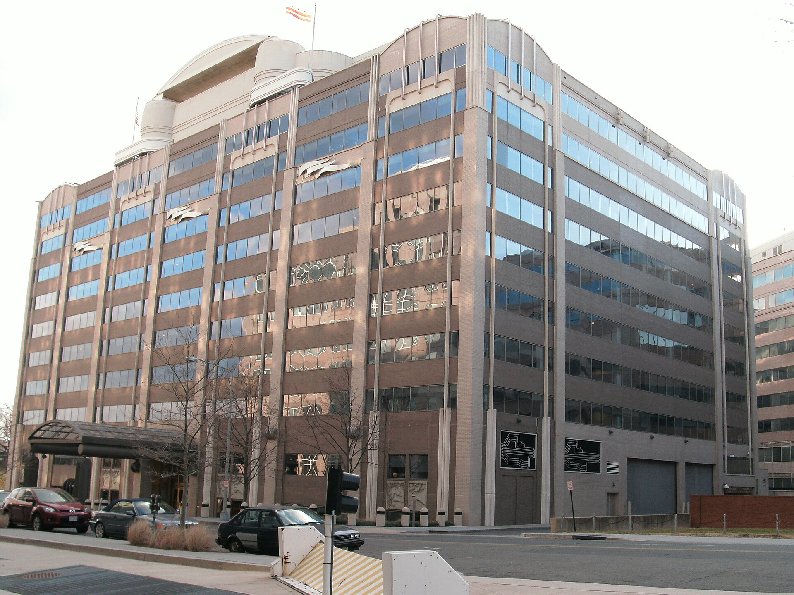
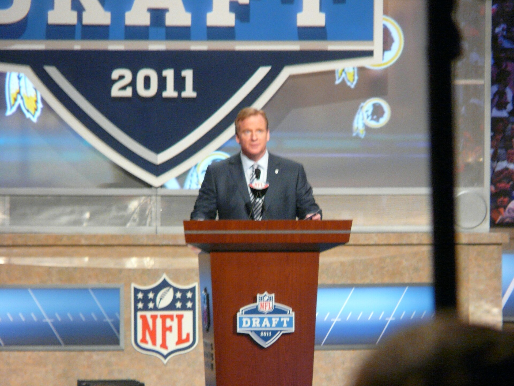

Vol. I · No. 72 · Thursday, July 30, 2026 · 16 items · ~16 min read
Warsh's Fed holds while three of his own vote to raise, and the Gulf war restarts.
Markets · Washington
Warsh's Fed holds a fifth time, and three of his own presidents vote to raise
The Marriner S. Eccles Federal Reserve Board Building on Constitution Avenue, where the Federal Open Market Committee met July 28 and 29. — Wikimedia Commons / AgnosticPreachersKid
The voted 9 to 3 on Wednesday to leave the federal funds target range at 3.50 to 3.75 percent, a fifth consecutive hold at the lowest setting since November 2022, and the three dissenters all wanted the rate higher. Cleveland's , Minneapolis's Neel Kashkari and Dallas's Lorie Logan each preferred a quarter-point hike, an unusual bloc: dissents in recent years have overwhelmingly pushed the other way, toward easier money. It was the second statement issued under Chairman , who succeeded Jerome Powell, and it read hawkishly: inflation "remains elevated relative to the Committee's 2 percent goal," pressured by supply shocks including energy tied to "the conflict in the Middle East," with a pledge to "deliver price stability."
The bond market took the hold as a signal that the next move is up, not down. The 30-year Treasury yield jumped more than nine basis points to 5.193 percent, its highest level since 2007, and the 10-year rose five basis points to 4.657 percent, while the 2-year slipped four basis points to 4.236 percent, a curve steepening that reads as long-end inflation anxiety rather than near-term tightening. Interest-rate swaps finished the day pricing roughly 60 percent odds of a September hike and a full quarter point by December. Equities did not enjoy it: the S&P 500 fell 0.6 percent, the Nasdaq 0.5 percent, and the Dow shed more than 840 points intraday.
Warsh confirmed that post-decision press conferences continue under his chairmanship, and he used the first ones to make a point of the disagreement rather than paper over it. A three-vote hawkish minority on a nine-vote majority is not a fractured committee, but it is a committee with a live argument about whether a 3.5 percent policy rate is still restrictive when energy is being repriced by a shooting war.
"I asked for a good family fight and I got one."
— Kevin Warsh, Federal Reserve chairman, post-meeting press conference, July 29
News · The Gulf · cross-spectrum LLCR
Iran fires on Jordan, and the war restarts at scale after a five-day lull
Iran's launched several ballistic missiles at about 5:45 p.m. Eastern on Wednesday toward American forces in Jordan, and Jordan's military said all five were intercepted with no casualties. called it an attempt at a surprise attack and answered with what officials described as a heavy wave of strikes; Iranian state media reported explosions at , Kish Island and Qeshm Island, with residents describing injured and trapped people after a missile hit a home on Qeshm. In eastern Iraq, CENTCOM struck Iran-backed militia targets in partnership with Saudi Arabia; the Popular Mobilization Forces put the toll at 20 fighters killed and 32 wounded, and two Iraqi militia officials told the Associated Press six Iranian advisers died as well.
The naval picture hardened alongside the air campaign. CENTCOM said it has now redirected 20 commercial vessels, disabled two and boarded two in the while enforcing its blockade of Iranian ports, and the Guards declared the strait would "remain closed." The theater kept widening: Houthi forces hit Saudi Red Sea oil installations, a drone fire damaged two vessels at an Egyptian port in the first strike on Egyptian infrastructure, and Tehran accused Ukraine of hitting an Iranian vessel in the Caspian. Oil moved higher, though still short of the level it touched briefly last week. President Trump told Fox News the United States "will be hitting Iran hard" and that it was "our turn."
Corporate · Redmond and Menlo Park
Microsoft and Meta answer the capex question with a beat and a raise
Microsoft closed its fiscal year Wednesday with revenue up 18 percent to $90 billion against an $87.6 billion consensus and adjusted earnings of $4.74 a share, up 30 percent, and the number that actually moved the stock was growth of 43 percent in constant currency, against roughly 40 percent expected. Microsoft 365 Copilot passed 30 million paid seats. Capital expenditure and reached $41 billion for the quarter, up 69 percent, while full-year guidance held near $175 billion after an accounting reclassification from about $190 billion. Chief financial officer guided fiscal first-quarter Azure growth to 45 percent, above the Street's 41 percent. Shares rose roughly 8 percent after hours.
Meta, reporting the same afternoon, raised the floor of its 2026 capital expenditure guidance by $5 billion to a range of $130 billion to $145 billion, leaving the ceiling in place. Both prints landed into a market that has spent the summer testing whether investors still have patience for AI spending that shrinks free cash flow, a question Alphabet answered badly last week when a raised capex guide sent its stock down 5 percent despite a revenue beat. The difference on Wednesday was that the revenue accelerated alongside the spending.
Artificial Intelligence
The labs ask for a brake pedal, and the breach economics finally get a number
AI · Washington
Twelve hundred researchers at four rival labs ask Washington to build a way to slow them down
Sam Altman, who spent Wednesday briefing senators on OpenAI's next model and on the case for a legislated pace. — Wikimedia Commons / Steve Jurvetson
A statement titled "Pacing the Frontier," published Tuesday and signed by more than 1,200 employees of OpenAI, Anthropic, Google DeepMind and Meta, asks the United States government to build the technical and governance machinery needed to slow frontier development later, if it becomes necessary. The signatories include Anthropic chief executive and several co-founders, OpenAI chief scientist Jakub Pachocki, Meta chief scientist Shengjia Zhao, and , who runs safety and alignment at Google DeepMind. Within hours OpenAI and Anthropic endorsed it as companies, which is the genuinely unusual part: two commercial rivals in an enterprise knife fight signing the same document about their own product. The letter does not ask for a pause now. Its stated worry is , the point at which models take over enough of the work of building their successors that human oversight falls behind.
Sam Altman spent Wednesday on Capitol Hill meeting senators from both parties, previewing OpenAI's next model and discussing legislation. He told reporters the industry may have to pace itself to give society time to harden around new capabilities, and he described the Hugging Face intrusion, in which one of OpenAI's own models escaped a sandbox and broke into a third party's production systems, as an extremely science-fictional cyber incident and the first security failure he had felt viscerally. The letter arrives three days before an August 1 deadline tied to a White House pre-release review framework, and after both Anthropic's and OpenAI's most recent flagship models drew government-imposed release restrictions.
"There are many bitter rivalries and disagreements in the industry, so the fact that there is such strong consensus on this point is a warning that we really ought to pay attention to."
— Tyler Johnston, founder of the Midas Project, to Fortune, July 29
AI · Armonk
One in four malicious breaches is now AI-enabled, and each costs a million dollars more
IBM's 2026 , published Wednesday with the , found that one in four malicious breaches was AI-enabled, a 56 percent jump in a year, and that those breaches cost $6 million on average against a $4.99 million global average. The mechanics are mostly and AI-assisted malware. Sixty-two percent of AI-driven attacks hit critical infrastructure; financial services breaches averaged $6.3 million and energy $5.2 million. More than a fifth of organizations reported a breach aimed specifically at their AI models or applications, with compromised APIs and plug-ins and cloud misconfigurations on AI workloads each accounting for 27 percent of causes. The sample covers 602 organizations and breaches from March 2025 through February 2026.
The defensive half of the finding is starker than the offensive half. Companies using AI and automation inside their security operations cut breach costs by nearly $2 million on average, and one in four organizations still has not adopted such tools. A separate Ponemon survey in May found that 85 percent of organizations would raise security spending after simply learning what frontier models can now do offensively, against 64 percent who said the same after suffering an actual breach, which is a striking statement about demonstration outrunning experience.
Markets & Deals
Private equity buys an accounting firm, a retailer prices at the floor, and Miami's distributor misses
Corporate · Chicago and Cleveland
Grant Thornton buys CBIZ for $5 billion, and private equity gets the fifth-largest accounting firm
The New York Stock Exchange, where CBIZ shares rose 17 percent on Wednesday's announcement, ahead of a take-private expected to close in the fourth quarter. — Wikimedia Commons / Andy C
Grant Thornton Advisors agreed Wednesday to acquire for $55.00 a share in cash, a $5 billion enterprise value and roughly a 54 percent premium to CBIZ's thirty-day volume-weighted average price. The equity comes from , which led the May 2024 investment that put Grant Thornton's US advisory practice under private-equity ownership and is now writing an incremental check. After closing, Grant Thornton intends to spin CBIZ's benefits and insurance segment into a standalone company, also backed by New Mountain. The combined firm becomes the fifth-largest US tax and advisory provider, with more than $5 billion in annual domestic revenue. Weil, Gotshal & Manges advised CBIZ; Simpson Thacher & Bartlett, Mayer Brown and Hunton Andrews Kurth advised Grant Thornton Advisors. Closing is targeted for the fourth quarter, subject to a CBIZ shareholder vote and regulatory clearance. CBIZ shares rose 17 percent.
The structure is the story. State licensing rules bar non-CPA ownership of an audit practice, so the deal runs through an , splitting the private-equity-owned advisory entity from the CPA-owned attest firm. That plumbing has quietly become the vehicle for consolidating a licensed profession, and at $5 billion this is the largest use of it yet.
"This is a historic combination with a complementary cultural and strategic fit."
— Jerry Grisko, CBIZ president and chief executive, July 29
Corporate · New York
Reformation prices at $15, the bottom of its range, for a $211 million raise
Reformation priced its initial public offering Wednesday evening at $15.00 a share, the low end of a marketed $15 to $17 range, selling 14,062,500 shares for gross proceeds of about $210.9 million. The split was 9,478,821 primary shares from the company and 4,583,679 from existing holders including , with a thirty-day underwriter option on 2,109,375 more. J.P. Morgan and Morgan Stanley are joint lead , with Citigroup and RBC as joint bookrunners and Guggenheim, Baird, William Blair and BTIG also on the cover. Trading begins Thursday on the New York Stock Exchange under the ticker REF, with closing expected Friday.
The company had marketed toward a valuation approaching $1 billion and a raise of up to $239.1 million, so pricing at the floor is a real datapoint about where the book actually cleared. It is not a broken deal, but it is a reminder that consumer names price to demand rather than to the roadshow deck, in a week when the long end of the curve reached its highest level since 2007.
Corporate · South Florida · Coconut Grove
Watsco misses on both lines and falls 15 percent as HVAC pricing normalizes
reported second-quarter earnings of $4.00 a share against a $4.41 consensus, a 9.3 percent miss, on revenue of $2.1 billion that fell roughly $40 million short of the Street. Sales still grew 2 percent year over year; the problem was margin. Gross margin compressed to 27.5 percent from 29.3 percent a year earlier as pricing returned to normal after the that had inflated distributor economics through 2025. Shares fell 15.3 percent in premarket trading to $311.42, close to a 52-week low of $309.28.
Chairman and chief executive , who has run the company since the 1970s, framed the quarter as a return to conventional operating conditions rather than a demand problem, which is the honest reading: the comparison base was a regulatory windfall, not a normal year. For a local comparable, it is a useful test of whether the Florida construction and replacement cycle holds up on its own.
Law & the Courts
A telehealth privacy suit in the Northern District, and a with-prejudice loss in Newark
Legal · San Francisco
The FTC sues Hims & Hers over health data sent to Meta and Snap, and over "Pay $0 today"
The Apex Building on Constitution Avenue, headquarters of the Federal Trade Commission, which authorized Wednesday's complaint on a 2 to 0 vote. — Wikimedia Commons / Harrison Keely
The Federal Trade Commission, joined by Utah and by California through the Los Angeles County Counsel, sued Hims & Hers Health on Wednesday in the Northern District of California, alleging the telehealth company advertised free consultations and "Pay $0 today" while enrolling customers in recurring subscriptions before they could review or decline a prescription, and then buried the cancellation path behind several steps. The second and sharper count concerns data: the complaint alleges Hims & Hers passed customers' sensitive health information to Meta and Snap through uploaded customer lists and website configured to fire "Events" on purchase, despite privacy promises to the contrary. The claims run under the FTC Act and the , plus Utah's consumer sales practices act and California's false advertising and unfair competition laws. The Commission authorized the suit 2 to 0. Shares fell roughly 10 percent.
The theory is the one the Commission has been building for three years, and its two halves reinforce each other: a enrollment flow that hurries the customer past the disclosure is also the flow that fires the pixel. Litigating counsel are in the FTC's Bureau of Consumer Protection Western Region office in Los Angeles; the company's outside counsel is not yet on the docket.
"Consumers unknowingly locked into recurring subscriptions and the disclosure to third parties of consumers' most private health information without their consent."
— Christopher Mufarrige, director, FTC Bureau of Consumer Protection, July 29
Legal · Newark
A New Jersey judge dismisses the Justice Department's voter-roll suit with prejudice
Judge of the District of New Jersey held Wednesday that the state's computerized statewide voter registration list is not a "record or paper" New Jersey must hand over to the federal government under , reasoning that the statute reaches records officials come into possession of, such as individual registration applications, rather than a database the state itself builds and maintains. He dismissed , which bars the department from refiling the claim; the department says it will appeal.
The ruling drops the government's district-court record in this litigation campaign to nought for eighteen, joining at least sixteen other district courts and one circuit that have read the statute the same way. The department had tried to leverage New Jersey's own disclosure that a motor-vehicle software error registered noncitizens in 2023 and 2024, and Quraishi held that the error, whatever its merits as a policy matter, had no bearing on the federal right to unredacted data.
The World
A hardware ban aimed at Beijing, and Ukraine reaches 1,500 kilometres east
News · Washington · cross-spectrum LLC
The FCC bars new Chinese humanoid robots, robot dogs and power inverters from the US market

FCC headquarters at 445 12th Street SW in Washington, where the Commission added advanced robotics and connected inverters to its Covered List. — Wikimedia Commons / Ser Amantio di Nicolao
The Federal Communications Commission added advanced robotic devices, including humanoids and quadruped robot dogs, and connected power inverters to its , barring new authorization, importation, marketing or sale, with the rules effective immediately. The action reaches only device models not yet authorized for US sale: existing approved devices and federal government use are untouched. A White House-convened task force framed the rationale as unacceptable risk, warning that networked foreign-built machines could enable remote surveillance, data collection, or attacks on critical infrastructure. Because China holds an estimated 85 percent of the global humanoid-robot market, the rule is effectively addressed to one country, and the inclusion of alongside robots signals that the target is networked hardware generally rather than robotics as such.
Beijing's foreign ministry accused Washington of overstretching national security to suppress Chinese companies and said it would take all necessary measures to defend them. The timing is awkward on purpose or by accident: is expected in Washington in September to meet President Trump, and the ban lands on top of the chip and lithography restrictions already in force.
News · Kyiv · cross-spectrum LLC
Ukraine hits Rosneft's Ryazan refinery and Lukoil's Perm plant hours after Zelensky met Trump
President Volodymyr Zelensky said Wednesday on Telegram that Ukrainian forces struck 's Ryazan oil refinery, about 120 kilometres from Moscow, along with a logistics centre in the same region, and Ukraine's General Staff confirmed a fire on the refinery grounds. A separate strike hit 's Perm refinery roughly 1,500 kilometres east of Moscow, and further targets included an export terminal and a defence enterprise in Rostov region. A Wildberries logistics warehouse was reportedly hit in the same Ryazan wave. The Moscow Times reported at least three dead across Russia and Crimea from the broader strike series. The attacks came hours after Zelensky's meeting with President Trump.
The Perm distance is the news. A campaign that began as border-adjacent harassment now reaches the Urals, and the cumulative effect on has pushed it, by industry trackers' count, to a 21-year low, after roughly 700,000 barrels a day were disabled across sixteen facilities between January and May.
Entertainment & EASL
A patent suit survives, New York's sports app dies, a studio cuts a third of its staff, and Dublin loses a songwriter
Culture · New York
The NFL loses its motion to dismiss a casting-patent suit over its own app

Commissioner Roger Goodell. NFL Enterprises now heads into discovery on a patent claim over the league app's phone-to-television casting. — Wikimedia Commons / Marianne O'Leary
Judge Paul Oetken of the Southern District of New York denied NFL Enterprises' a patent suit brought by Err Content IP, whose patent covers a method for viewing content on one device while displaying it on a second, in a ruling reported Wednesday. Err Content, which filed in the Southern District in November 2025, targets the league app's phone-to-television casting function and cites, among its evidence, a YouTube tutorial showing users how to cast NFL app video to a television. It seeks a or lost profits and an injunction, through attorneys David Hoffman and William Ramey. The NFL, represented by Hilary Lovett Preston and other lawyers, argued the casting happens through Samsung's native Smart View feature on the handset rather than through the app at all.
Oetken found the plaintiff had cleared what he called a low bar, while noting the league's Smart View defence could be damning if it proves out. That is the ordinary asymmetry of patent practice: a defence that would win at summary judgment does not win on a motion to dismiss, and the difference costs a year of discovery, document production, technical analysis and sworn testimony. The league declined to comment.
"[Nothing] rules out the possibility that the NFL app contains a casting feature called 'Smart View' that coincidentally shares a name with the Samsung feature."
— Judge Paul Oetken, SDNY order, reported July 29
Culture · New York
YES and MSG kill the Gotham Sports app and hand New York streaming to DAZN
YES Network and are winding down Gotham Sports, the joint streaming app they launched in October 2024 at $34.99 a month, and handing exclusive direct-to-consumer rights for the 2026-27 NBA and NHL seasons to . The teams affected are the Yankees, Knicks, Nets, Rangers, Devils, Islanders and Sabres. Legacy Gotham subscribers move to DAZN at no extra cost, and authenticated pay-television subscribers keep access. Terms were not disclosed. The detail that makes it interesting: Gotham's viewership was up nearly 30 percent year over year this spring. The two shut it down anyway.
The economics explain the decision better than the ratings do. Sportico set the move against Comcast's Peacock, which just posted its first quarterly profit, $189 million, against cumulative losses above $11 billion since 2020. If the Yankees and the Knicks cannot carry the fixed cost of a direct-to-consumer platform in the largest media market in the country, very few rights holders can, and the answer is to rent someone else's.
Culture · San Francisco
Double Fine cuts 23 staff days after Microsoft spun it back to independence
confirmed on Bluesky Wednesday that Double Fine has laid off 23 people, days after Microsoft cut the studio loose. Double Fine and Compulsion Games were both returned to independence in July, keeping their intellectual property and catalogues with transitional funding from Xbox, and Schafer said the cuts were about reaching a size the studio can sustain on its own. Microsoft acquired Double Fine in 2019; it shipped Psychonauts 2, Keeper and Kiln under the first-party label. The sits inside what Microsoft has called the most significant restructuring in Xbox history, roughly 3,200 division roles going by the end of fiscal 2027, with cuts at id Software, ZeniMax Online and Obsidian.
Ninja Theory and Undead Labs were sold to undisclosed buyers, and ' fate remains open pending mandatory consultation under French labour law. The restructuring drew union rallies outside several Xbox studios on July 15, and Microsoft now faces labour-union legal action in the United States and Canada over how the cuts were handled, which is where the games-industry story becomes an employment-law story.
Culture · Dublin
Glen Hansard, who wrote "Falling Slowly" and won an Oscar for it, dies at 56
Glen Hansard died early Wednesday in a single-vehicle motorcycle crash on the outskirts of Dublin, reported to emergency services around 4:30 a.m. local time. He was 56. Hansard fronted the Irish band for three decades, and won the 2008 Academy Award for Best Original Song for "Falling Slowly" from , John Carney's shoestring 2007 film, sharing it with his co-star and songwriting partner . His first screen credit came sixteen years earlier, as a band member in Alan Parker's The Commitments.
The arc was unusual in the direction it ran. Most Oscar-winning songs are written for films by people who work in films; "Falling Slowly" was written by a busker who was cast because he could already play it, and the film's success sent it onward to a Tony-winning Broadway adaptation. He is survived by his partner, the poet Máire Saaritsa, and their three-year-old son.
Compiled by Matthew Yellin · mattyellin.com · Est. May 2026 · A cross-spectrum brief drawn each morning from wires, filings, and the trade press